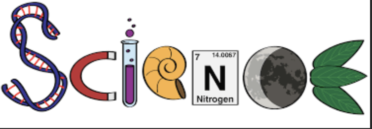
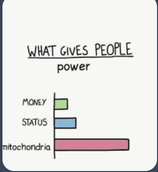

developed in the late 17th century by Isaac Newton and Gottfried Wilhelm Leibniz independently of each other. An argument over priority led to the Leibniz–Newton calculus controversy which continued until the death of Leibniz in 1716. The development of calculus and its uses within the sciences have continued to the present.
History of Calculus : was made in 1665–1666 by Isaac newton and Gottfried Wilhelm Leibniz. now if you think your bored remember that newton made calculus during plague do you have any idea how bored you have to be invent Calculus.
Science is a systematic enterprise that builds and organizes knowledge in the form of testable explanations and predictions about the natural world. It involves observing, studying, and experimenting to understand the underlying principles and mechanisms of the universe. Science encompasses various disciplines such as biology, chemistry, physics, astronomy, and geology, each focusing on specific aspects of the natural world. Through the scientific method, scientists collect data, formulate hypotheses, conduct experiments, and analyze results to gain a deeper understanding of how the world works. The goal of science is to expand our knowledge and improve our understanding of the world around us.
CS stands for Computer Science, which is the study of the principles and practices of computing. It involves the design, development, and analysis of algorithms, software, and hardware used in computer systems. CS covers a wide range of topics such as programming languages, data structures, artificial intelligence, computer networks, and cybersecurity. It is a rapidly growing field with diverse career opportunities in industries such as technology, finance, healthcare, and entertainment.
Biology is the scientific study of living organisms and their interactions with each other and their environment. It encompasses a wide range of topics, including the structure, function, growth, evolution, distribution, and classification of living organisms. Biology is a broad field that includes many sub-disciplines, such as genetics, ecology, physiology, microbiology, and botany. It is a fundamental science that helps us understand the complexity and diversity of life on Earth, as well as the processes that govern life at the molecular, cellular, organismal, and ecosystem levels. Biology is important for many reasons, including advancing our knowledge of how living organisms function and interact with each other and their environment, improving human health through medical research and biotechnology, and informing conservation efforts to protect biodiversity and ecosystems. It is a dynamic and constantly evolving field that continues to uncover new discoveries and insights into the natural world.
Chemistry is the scientific study of matter, its properties, composition, and interactions with other substances. It is often referred to as the central science because it connects and overlaps with other branches of science such as biology, physics, and environmental science. Chemists study the structure of atoms and molecules, the way they interact with each other, and how they combine to form new substances. Chemistry is divided into several sub-disciplines, including organic chemistry (the study of carbon-containing compounds), inorganic chemistry (the study of non-carbon-containing compounds), physical chemistry (the study of the physical properties and behavior of matter), and analytical chemistry (the study of the composition of substances and their properties). Chemistry plays a crucial role in various industries, including pharmaceuticals, agriculture, materials science, and environmental science. It is also important for understanding natural processes such as photosynthesis, digestion, and the formation of minerals. Chemistry helps us understand the world around us and develop new technologies and products to improve our lives.

History is the study of the past events, people, and societies. It involves researching, analyzing, and interpreting the events that have shaped the world as we know it today. Historians use various sources such as written documents, artifacts, and oral histories to piece together a narrative of the past. The study of history helps us understand how societies have evolved over time, the causes and effects of major events, and the patterns and trends that have shaped human civilization. It also helps us learn from the mistakes and successes of the past in order to make informed decisions for the future. History is a multidisciplinary field that encompasses various areas such as political, social, cultural, economic, and military history. It provides us with a deeper understanding of our own identities, origins, and connections to the broader world. Ultimately, history helps us make sense of the present by providing context and perspective on the world around us.

Law is a system of rules and regulations that are enforced by a governing authority, such as a government or legal system. These rules are designed to regulate behavior and ensure order within a society. Laws can be created at various levels, including local, state, and federal levels, and cover a wide range of topics such as criminal behavior, property rights, contracts, and civil rights. Violating a law can result in penalties such as fines, imprisonment, or other consequences determined by the legal system. The purpose of law is to provide a framework for resolving disputes, protecting individual rights, and promoting justice and fairness in society.